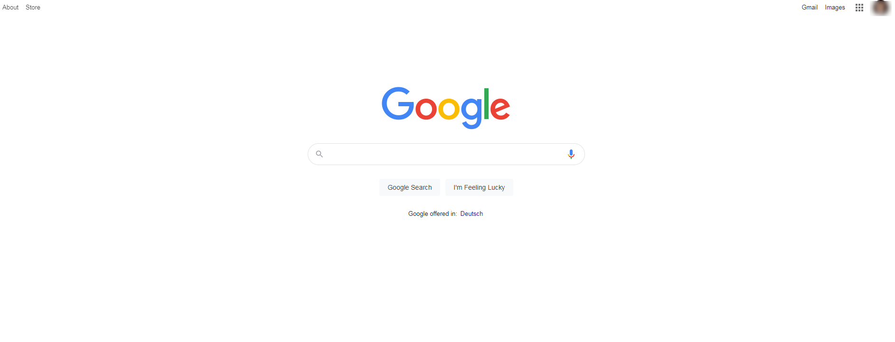

Live Project
Our customers want to have all thier CVs(also called resume) ported from
word documents to html.
However they would like to see a prototype of one of the CVs in html.
Your task is to prepare your CV in *.html and beautify it with *.css as a
demonstration for our customers.
Live Task 1: Your CV in html, Deadline: 15 Jan, 2021
-
We have created a new repo where you will work on live task.
You must have received an email to accept invitation for this new repo. Please accept it.
For cloning use git clone https://github.com/parageek/CustomerCVs.git
- Remember:
- This is your repo where you will work on live project.
-
If you want to practice or try out something please use the
playgroundrepo which was provided earlier.
-
Your task is successful if you are able to create a html page that looks similar to here
-
Note that the above html page is only given for reference, you could use more/less content or different color combinations that you feel like.
Feel free to use images if you can. That would give you a plus point.
-
Keep your live repository clean i.e., add respective folders or subfolders if you want to avoid several html files or css files in one place.
-
If you have any problems you could :
- try to solve it on your own by deleting and adding again or experimenting in playgroundrepo or
-
search on google or
-
check if this website has the information that you need or
-
check if the earlier scrimba course already had taught you the content and may be you forgot , you could have a look at it again here.
-
check some more courses on css/html on scrimba, may be you would like to go through them here.
Live Task 2: Improve your CV, Deadline: 15 Feb, 2021
-
In Scrimba see this video : https://scrimba.com/learn/introtocss.
Now the trainer in the training starts working and typing in index.html and some other files (eg:css).
You should follow the trainer and type in your own files as the trainer says and also add/delete files as he says in the video.
Push all your changes in git in the playground repo
-
Now that you have already gone through the training, go into the CV that you have already made and change the font of your name to 'Black Han Sans', arial, sans-serif.
-
In Scrimba see this video : https://scrimba.com/learn/cssanimations.
Now the trainer in the training starts working and typing in index.html and some other files (eg:css etc).
You should follow the trainer and type in your own files as the trainer says and also add/delete files as he says in the video.
Push all your changes in git in the playground repo.
- Now that you have already gone through the training, go into the CV that you have already made and
on hovering over your name in the CV it should change its color to #50BFC7 and grow
-
Your next task is to fade in the text which is under Education Details section.
Live Task 3: Create complex websites - preparation, Deadline: 17 Feb, 2021
-
First login in In Code with mosh in the link here:https://codewithmosh.com/.
User Id and password will be given to you.
After logging in, go to MyCourses on the top and search for html. Click on Part 1
Now click on first lecture and start your course.
Now the trainer in the training starts working and typing in index.html and some other files (eg:css).
You should follow the trainer and type in your own files as the trainer says and also add/delete files as he says in the video.
Push all your changes in git in the playground repo
-
Now that you have already gone through the Part 1, search for html again as in above and click on Part 2.
Click on the lecture and start your course from beginning.
Now the trainer in the training starts working and typing in index.html and some other files (eg:css).
You should follow the trainer and type in your own files as the trainer says and also add/delete files as he says in the video.
Push all your changes in git in the playground repo
-
Now that you have already gone through the Part 2, repeat the above steps for Part 3.
Live Task 4: Create complex websites, Deadline: 31 Mar, 2021
-
Ensure that your have downloaded all Mosh videos before proceeding to this task.
Now that you have already gone through the trainings create following websites and push to CustomerCV repo
-
A google website that looks like this

-
A facebook log in page that looks like this
-
A duck duck go search page that looks like this
-
A Mc Donalds menu page that looks like this
More details you can find here as well: https://www.mcdonalds.com/us/en-us/full-menu.html